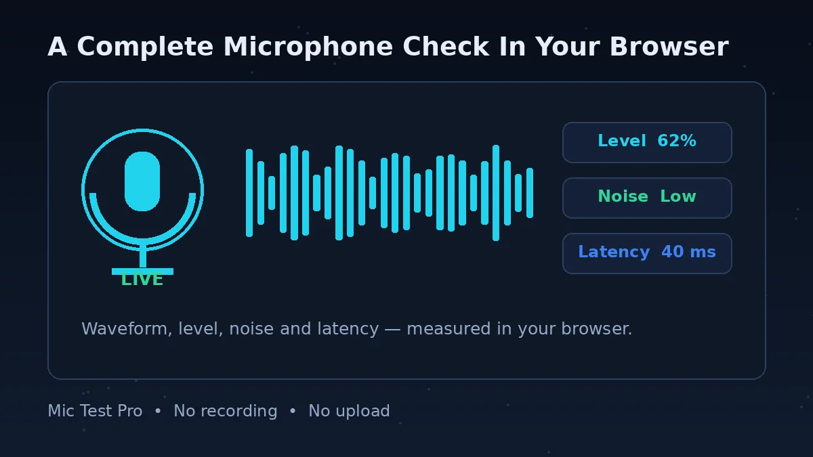
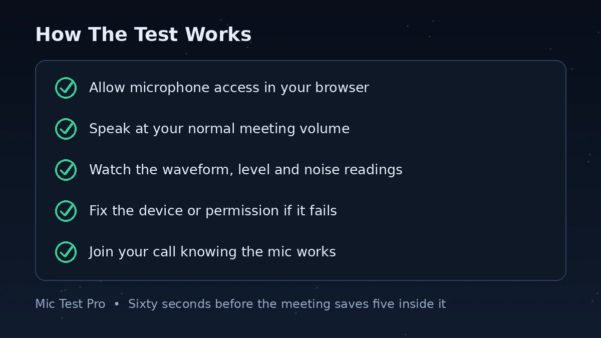
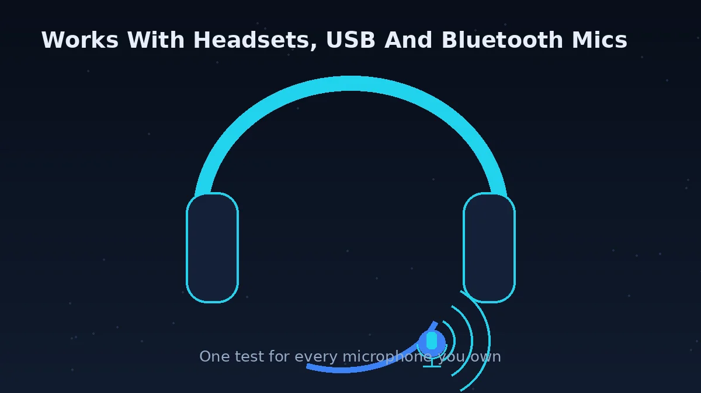
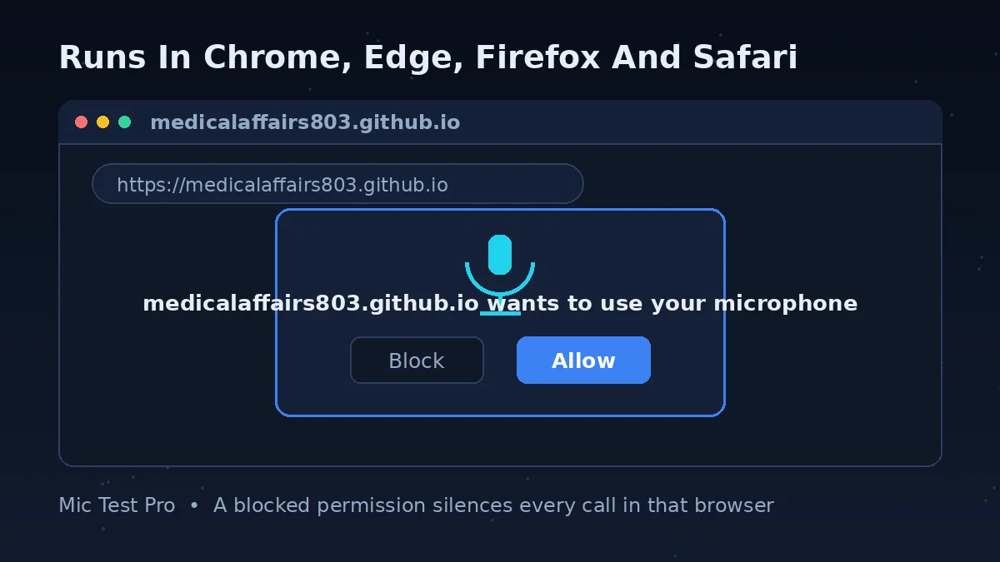

What Is A Microphone Test?

A microphone test helps you check whether your mic is working correctly. This online mic tester detects your microphone directly inside the browser without installing software. You allow access, you speak, and you see and measure what your microphone is actually sending — a live waveform, an input level, a noise reading and a latency figure.
You can use this microphone checker to test voice clarity, audio input sensitivity, microphone volume, latency, and background noise before meetings, streaming, gaming, Discord calls, Zoom meetings, online classes, or recording sessions.
Its real value is separation. Every voice app — Zoom, Teams, Discord, your game, your recorder — adds its own microphone choice, volume and processing on top of your hardware. When your voice fails, any one of those layers can be responsible, and they all sound identical: silence, or mush. A browser test reads the layer underneath all of them. Pass here, and your mic, cable and system settings are proven good; whatever remains wrong lives inside one app's settings, and you can stop reinstalling drivers.
Fail here, and the opposite is true: no setting inside any app will rescue a microphone your computer itself cannot hear, so you fix the device, the connection or the system permission first — and this page's questions below walk through each.
How To Test Your Microphone Online

Click the Start Mic Test button above.
Allow microphone permission in your browser when it asks. That prompt is the browser's security check, and the test cannot hear anything until you allow it. Blocked it earlier by mistake? The FAQ below explains how to undo that in the address bar.
Speak into your microphone at the volume and distance you will actually use — a meeting voice, not a stage voice — and watch the live sound meter and waveform respond.
Read the four results together: Input Level should move strongly with speech, Noise Level should stay low while you are silent, the Device line should name the microphone you meant to use, and Latency should sit in the low tens of milliseconds or less.
If a reading is wrong, fix that layer before opening your app: wrong device name means change the system input; high noise means move the mic closer, lower the gain, or quiet the room; no movement at all means permission or connection, in that order.
Core Features

Real-Time Audio Detection
Detect live microphone input instantly, as you speak. No recording, no uploading, no waiting for a result file — the answer is on screen while the sound is still in the room.
Noise Analysis
Check background noise levels while you sit in silence. This is the reading your meeting partners wish you could see: if it is high with nobody talking, your voice is competing with your room in every call.
Live Waveform
Visual microphone audio monitoring. A healthy waveform rises and falls with your sentences; a flat line means no signal, and a solid block means you are far too loud and distorting.
Latency Check
Measure microphone response delay. It matters for gaming, streaming and singing along to anything — and it is the one problem you cannot hear in your own headphones while it annoys everyone else.
Browser-Based Testing
No download or installation required. If your browser can open this page and ask for the microphone, it can run the full test — which also makes this the fastest check on a borrowed or work computer where you cannot install anything.
Privacy Friendly
Audio never leaves your browser. The analysis happens on your device with the Web Audio API, so you can test a microphone before a sensitive call without your voice touching a server.
Benefits Of Using This Mic Tester
- Test your microphone before online meetings.
- Check gaming headset microphone quality.
- Improve streaming and recording setup.
- Detect audio distortion and low volume.
- Verify browser microphone permissions.
Why This Tool Is Helpful
| Feature | This Tool | Basic Tools |
|---|---|---|
| Live Audio Meter | Yes | Limited |
| Waveform Visualizer | Yes | No |
| Noise Detection | Yes | No |
| Works In Browser | Yes | Yes |
| Device Name Identified | Yes | No |
| Latency Measurement | Yes | No |
Why Use This Online Microphone Tester?
This free mic test tool is useful for gamers, students, streamers, podcasters, remote workers, and anyone using online voice communication. It earns its place in one moment: the two minutes before something important, when "can you hear me?" is not an acceptable opening line.
The tool works directly in modern browsers using the Web Audio API and microphone permission system. You can test USB microphones, headset microphones, Bluetooth microphones, laptop microphones, and external audio devices instantly — and because the test sits below every app's own settings, its verdict tells you where a problem lives, not just that one exists.
For a specific app or device, use the dedicated tests on this site: the Zoom and Discord pages speak those apps' settings language, the gaming page covers headsets and Steam, and the Bluetooth and USB pages handle the two connection types with the strangest failure modes. This page remains the neutral first check for all of them.
Which Browsers And Devices Does This Mic Test Work With?

Short answer: any modern browser on any device you own — Chrome, Edge, Firefox or Safari, running on Windows, Mac, Linux, Android or iPhone.
The test needs exactly two things from your browser: the ability to ask for microphone access, and the Web Audio API to analyse the stream. Both have been standard in mainstream browsers for years, so a failure to start almost never means an unsupported browser. It usually means one of three things: the page was opened inside another app's built-in browser (messaging and social apps do this, and their mini-browsers often cannot use the microphone — open the page in your full browser instead), the browser is out of date, or microphone access for this site was denied earlier and stayed denied.
On phones the same test covers the built-in microphone, wired earbuds and Bluetooth headsets. The phone decides which microphone is live, and it does not always choose the one you are holding — which is why the tap test appears throughout this site: tap the headset, then tap the phone, and the tap that moves the meter is the microphone you are really using.
Testing Your Microphone On Windows 11
Short answer: set the right input in Settings > System > Sound, confirm Windows itself can hear you there, then run this test — in that order.
Windows 11 keeps two separate microphone gates, and either one can silence you. The first is selection: open Settings > System > Sound, and under Input choose your microphone. Speak, and watch Windows' own input volume meter react; if it stays flat, the problem is below every app — check the cable, the port, or the device itself. The second gate is privacy: in Settings > Privacy & security > Microphone, turn on Microphone access and let-apps access, or browsers and calling apps will be refused the mic even though Windows can hear it perfectly.
Once Windows hears you, this browser test should agree within seconds. If Windows hears you and this page does not, the remaining suspect is the browser's own per-site permission — click the icon in the address bar and allow the microphone for this site. If this page hears you and one app does not, the app has chosen a different input in its own settings. Three layers, three quick checks, and each failure points at exactly one of them.
Frequently Asked Questions
Is this mic test free?
Yes, the microphone tester is completely free. There is no sign-up, no download and no limit on how many times you can test.
Does this tool record audio?
No. Audio stays inside your browser. The test analyses your microphone stream on your own device to draw the waveform and calculate the readings — nothing is recorded, uploaded or stored anywhere.
Which browsers can I use for this mic test?
Any modern browser that can ask for microphone access: Chrome, Edge, Firefox and Safari, on Windows, Mac, Linux, Android and iPhone. If the Start button does nothing, the browser is usually too old, in a private or in-app browser window (for example, a browser inside a social media app), or the site has been denied microphone access before — open the page in your main browser and check the permission in the address bar.
Can I test my microphone on my phone?
Yes. Open this page in your phone's browser, tap Start Mic Test and allow microphone access. It works for the built-in phone mic and for connected headsets and earbuds. One phone habit to watch: phones switch to whichever microphone was connected last, and Bluetooth earbuds may be selected for sound but not for voice — if the level does not move when you speak into the headset, tap near the headset and then near the phone; whichever tap spikes the level is the live mic.
Why does the browser ask for microphone permission — and what if I blocked it?
The browser asks because no website may listen to your microphone without your say-so; that permission popup is the security system working, and this test cannot start without it. If you clicked Block by mistake, the test will stay silent forever until you undo it: click the lock or site-settings icon in the address bar, find Microphone, change it to Allow, and reload the page. On Windows also check Settings > Privacy & security > Microphone is on for your browser; on a Mac, System Settings > Privacy & Security > Microphone.
Can I test a USB microphone?
Yes, USB microphones are supported — plug the mic in before you start the test so the browser can offer it, and check that the Device reading on this page names your USB mic. If your USB mic misbehaves (not detected, buzzing, vanishing mid-call), the dedicated USB microphone test page has a full troubleshooting table for exactly those problems.
Why is my microphone not detected?
Check browser permission settings and device connection first — a blocked permission and an unplugged or unselected device cause most cases. Then check the system level: in Windows, Settings > System > Sound > Input should list and show your mic reacting; on a Mac, System Settings > Sound > Input. If the system cannot see the mic, no website can. If the system sees it but this page does not, the browser permission is the blocker — reset it as described in the permission question above.
My mic works in this test but not in Zoom or Teams — why?
Because those apps keep their own microphone choice and do not always follow your system or browser. Your hardware just passed here, so go straight to the app's audio settings and pick the same microphone by name instead of leaving it on a default that may point at a webcam or a disconnected headset. There is a dedicated Zoom mic test page on this site with the exact Zoom settings and fixes, if Zoom is your problem app.
How do I know if my microphone quality is good enough?
Use the three readings together. Input level: normal speech should move the meter strongly without sitting pinned at the very top (that is distortion). Noise level: stay silent for a few seconds — the reading should stay low; a high silent reading means your listeners hear your room as much as you. Latency: lower is better, and anything in the low tens of milliseconds is fine for calls and meetings. If all three behave at your normal speaking distance and volume, your quality is good enough for meetings, classes, streaming and gaming — the remaining differences between microphones are taste, not problems.
Recommended Microphones
If the test above shows your current mic is weak, noisy or faulty, these are the two budget upgrades worth looking at first. Test your new mic here when it arrives to check it works properly.
USB Microphones
Best for: meetings, classes, streaming and recording at a desk. Plugs straight into your computer — no extra equipment needed, and usually a big step up from a laptop's built-in mic.
See USB microphones on AliExpress →
Headsets with a Mic
Best for: gaming and long calls. The mic sits close to your mouth, so your voice stays clear and room noise stays low — and you hear the game or call at the same time.
See headsets with mics on AliExpress →
Affiliate note: the links above go to AliExpress. If you buy through them, this site may earn a small commission at no extra cost to you. It helps keep this mic test free.